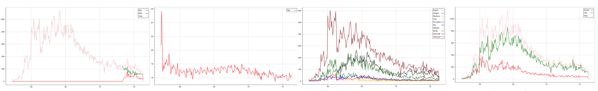

This project was in partnership with Ciao.ch, an association with the aim of contributing to the well being of teenagers in Suisse Romande by providing a forum, on which the teenagers can ask questions in staying anonymous.
Launch in 97, they want to have a global view of the evolution of the questions until today, to identify possible trends within them and to potentially link them to external events or innovations. The data set is an aggregation of more than 100’000 questions formed by the following attributes.
| Date | Sex | Age | Région | Thème | Titre | Question | Réponse |
|---|---|---|---|---|---|---|---|
| 2014-12.. | F | 14 | Vaud | Séxualité | En … | Je suis…? | Il est …. |
Unfortunately, when we look at the visualisations of our analysis, we realise that the number of questions asked is reducing with time and in all categories. This is due to the fact that teenagers are checking some already asked questions. Thus, analysing the frequency of asked questions is not representatif at all. Despite the fact that there is some interesting patterns that are drawn on the visualisations, the project will take an other direction.
Three themes are most important compared to the others, which are sex, drugs and self-confidence. CIAO also wanted to discover subcategories to have a better classification of their posts, so that teenagers can search them faster and more efficiently. So our new goal was then to add a new subtheme column to the original csv file and to fill in for these three themes by analysing the data.
| Date | Sex | Age | Région | Thème | Titre | Question | Réponse | Sous-thème |
|---|---|---|---|---|---|---|---|---|
| 2014-12.. | F | 14 | Vaud | Séxualité | En … | Je suis…? | Il est …. | Contraception |
To do so, we needed python to process all the data. First, we had to prepare the data with these scripts(preparing the data files)
.Once the file prepared, we can now cluster the three most important themes that we choosed, sex, drugs and "self-confidence". We are using the LDA approach for clustering. The script only provides the cluster code for one theme, it's exactly the same for the others.
Here are the results of the discover of the new subthemes of each theme:
Sexualité: Contraception - Anatomie - Rapport sexuel - Amitié / Amour
Boire, fumer et se droguer: Substance - Tabagisme & cannabis - Entourage - Alcool
Moi, toi et les autres: Amour - Famille - Image de soi - Le temps dans les relations
In this last script(subtheme classifier), we are adding a new column to the original csv file with the new discovered subtheme.
Let's have a look to a sample of the result!
After having analyzed the results, we want do some comments. First, we should also including the titles into our analyzis, because they are very rich in information. And second comment, we are only vectorizing the questions, but not the words. Which means that the similarity between "Alcool" and "Alcol" is 0 in our case. Vectorizing words as well would provide a high similarity between the right and mispelled word. The posts are posted by teenagers, and there is a lot, LOT of mistakes in the words. Vectorizing words would be very important as well to have really accurate results.
But in general, the results are pretty good, we are happy of what we could do with this class.
Thank you!!! Group 20.
Bryan cornelius - Florent Plomb - Matthieu Harbich